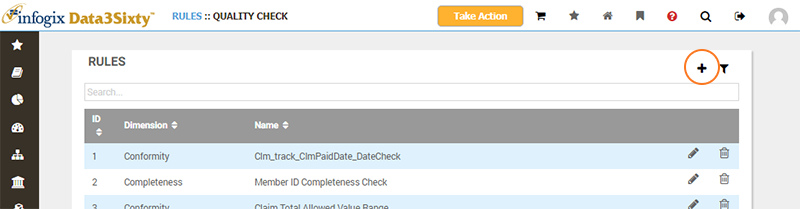
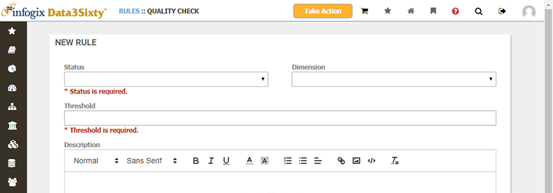
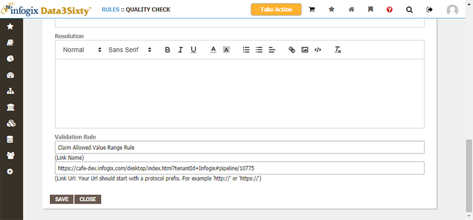
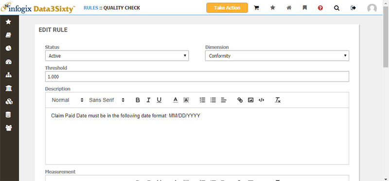

|
|
Creating and editing quality rules
Creating quality rules
From the Rules page, click on the Add button to create a new quality rule:

The Add Rule panel appears:

Choose the initial Status and the quality Dimension for the rule.
Provide a value for the Threshold, to define the pass rate (as a ratio from 0 to 1) to consider the rule satisfied.
You must also specify a Name and then can optionally provide extra context for the rule in Description, Measurement, Purpose and Resolution.

Validation Rule allows you to specify a name and link URL to the external system used to generate the quality data imported into your system. The URL is a link to a page in your external system, and the name is the text used to represent the hyperlink.
Editing quality rules
You can also Edit and Delete existing rules. Choosing the Edit action will bring up the Edit Rule panel:
